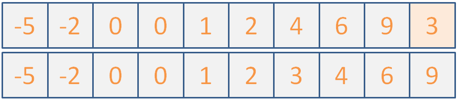
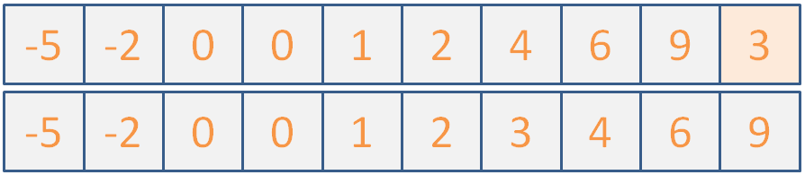

Announcements
I'm leaving for Australia tonight and will be gone for a week! As such, my office hours for next week (usually on Thursday, 8/10) will instead be after next week's discussion, 8/11 from 2:30 pm - 5:30 pm.
Fear not! I'll try not to leave you in the lurch with Project 4 and will still be monitoring emails while away, just don't be alarmed if they arrive upside-down.
Questions from Last Week
A few individuals had questions last week that I promised to clear up at the start of today's discussion; let's do so now!
Question 1: what happens if an abstract class has a pure-virtual destructor, but also has dynamically allocated data members that it needs to clean up?
Answer 1: remember that pure-virtual functions can still be implemented (i.e., given a definition). Observe the following example.
#include <string>
#include <iostream>
using namespace std;
struct AbstractBase {
string* s;
AbstractBase() {
cout << "[C] Abstract Base Constructor!" << endl;
s = new string("test!");
}
virtual ~AbstractBase() = 0;
};
struct ConcreteDerived : public AbstractBase {
// ...
};
AbstractBase::~AbstractBase() {
cout << "[D] Abstract Base Destructor!" << endl;
delete s;
}
int main() {
ConcreteDerived d;
// [!] What will happen if we un-comment
// the following line?
// AbstractBase a;
}
Question 2: How does the placement of the const keyword affect the behavior
of my member functions?
The two placements that tend to confuse the most are as follows:
const returnType name () { ... }: this format promises that the returned returnType will be const-modified (and therefore its data members cannot be modified).returnType name () const { ... }: this format promises that the calling object will not have any of its data-members changed by invoking the function.
Here's a small example:
#include <string>
#include <iostream>
using namespace std;
struct AssTest {
int i;
AssTest(int j) : i(j) {};
// [!] Promises to return a const reference to this
// AssTest...
const AssTest& operator+=(const AssTest& other) {
i += other.i;
return *this;
}
};
The following main method will work just fine.
int main() {
AssTest a1(1);
AssTest a2(2);
// Types are:
// AssTest += AssTest += AssTest
a1 += a2 += a2;
cout << a1.i << endl;
cout << a2.i << endl;
}
BUT, our tagging the return type as const will prevent behavior that invites ambiguity like:
int main() {
AssTest a1(1);
AssTest a2(2);
// [X] Will NOT compile. Types are:
// (AssTest += AssTest) += AssTest
// => const AssTest += AssTest
(a1 += a2) += a2;
cout << a1.i << endl;
cout << a2.i << endl;
}
Consider whether or not the following overload of the += operator will compile:
struct AssTest {
int i;
AssTest(int j) : i(j) {};
// [?] Will this work?
AssTest& operator+=(const AssTest& other) const {
i += other.i;
return *this;
}
};
Today's Agenda
I'd like to say that because you just had a midterm, we can take it easy, but such is life there is much to cover!
As such, we'll try to prioritize what you want to hear about most, from among the topics below (and anything else can be "assigned reading" heh).
Runtime Analysis
Sorting
Project 4 Review
STL and Iterators
Complexity Analysis
So we've just seen some common algorithms that programmers of yore have abstracted for us, but now a new question crops up: is one algorithm better than another?
Perhaps we need to take a step back... what does it mean for an algorithm to be better than another?
Algorithm complexity is often measured in terms of the growth rate of the time (and sometimes space in memory) it takes to successfully solve a problem based on the size of its input.
So, given the same input and the same task (sort, search, replace, etc.), we would like a way to judge which of some set of algorithms do it the best.
This is not only useful for comparing algorithm efficiency, but also for determining how well a single algorithm scales with large input. Let's look at speed first:
Is it a viable test for speed to run two algorithms on two computers and simply time each to see which is faster?
Not in general! Differences in hardware, running processes, and other differences between platforms can confound a speed test.
OK, so we want some sort of evaluation that is hardware-agnostic.
Suggest another way to measure the speed of an algorithm.
Count the number of statements that algorithm executes, which translate to machine instructions, which translate to time.
Alright, let's look at a simple algorithm then:
// Returns true iff the dividend is evenly divided
// by the divisor
bool divisibleBy (int dividend, int divisor) {
return (dividend % divisor == 0);
}
int main () {
cout << divisibleBy(5, 2) << endl;
cout << divisibleBy(9, 3) << endl;
cout << divisibleBy(500, 200) << endl;
cout << divisibleBy(900, 300) << endl;
cout << divisibleBy(50000, 20000) << endl;
cout << divisibleBy(90000, 30000) << endl;
}
Does the algorithm take more steps or execute more statements the larger the input gets?
No! Regardless of how large the input gets, i.e., independent of the input, this algorithm takes the same number of steps: a single modulus calculation.
Steps in algorithm (Y) as a function of size of input (X)
"Andrew, that's possibly the worst graph I've ever seen. It is literally a box."
It's to illustrate a point! Wait til you see the next one...
In any event, we see that regardless of how large the input gets, we still take the same amount of steps.
To represent a tight bound of complexity, it is common to use Big O Notation, designated O(N) where N is some growth rate.
Big O notation says that, "As this algorithm's input gets larger and larger until infinity, we can predict that its pattern of growth will approximately follow some function of N."
Since we don't really care about small input (computers will handle small jobs quickly regardless of how good an algorithm is), we speak of efficiency at the asymptotic level.
Asymptotic analysis means we're looking at how well an algorithm performs as the size of its input reaches infinity.
Why are we typically concerned with asymptotic analysis rather than, say, finite-input-size analysis?
Most smaller input sizes will be handled easily by modern computers, and so reasoning as the size trends to infinity helps us focus on the larger cases where performance might start to degrade. It also allows us some theoretical simplifications when it comes to proving performance bounds.
So, from our divisbleBy example, we saw that regardless of the input size, it still only took 1 step. So, we'd say that had a time complexity O(1).
A constant time complexity is an algorithm that is independent of the input size. We represent this as O(1).
Let's take a quick detour into Big O notation before we continue.
We said that our analysis is on the asymptotic case where our input is infinitely large.
We could say that as our data size, n -> infinity, then a constant time algorithm will be unchanged. i.e.:
lim 1 = 1 n -> infinity
Now, say we observed an algorithm that takes the following number of steps:
5n + 10000
Even though this algorithm takes 10005 steps for an input size of 1 (n = 1), look what happens as n goes to infinity:
[n = 100] 500 + 10000 [n = 10000] 50000 + 10000 [n = 100000000] 500000000 + 10000
The larger n gets, the less significant that extra, constant 10000 steps appears to be.
So, when we measure growth rates in the form of Big O notation, we only care about the highest degree term of the polynomial. We don't even care about coefficients at the asymptotic level.
Determine the Big O equivalents of the following expressions:
1) 500 2) 2000n + 1 3) 5000n + 2000n 4) 3n^2 + 2n + 10000
Answers here.
1) O(1)
2) O(n)
3) O(n)
4) O(n^2)
Now that we know how to represent complexities, let's talk about how to discover them from a code segment.
Here's my heuristic for examining complexity:
Find all statements / control flow structures (typically iterations / recurrences) that rely on the size of the input.
Identify any code that executes as a consequence of one of these statements or control flow structures and note how they will be dependent on the size of the input (e.g., code inside of a loop that is dependent on the size of the input will be executed more times the larger the input).
Determine how many times the code identified in (2) will be affected by the size-dependent code from (1).
This gives a basic algorithm for finding the complexity of an algorithm (woah, meta).
Shall we give it a try? Let's look at this simple indexOf function:
// Returns the location of the query int
// within the given int array
int indexOf (int i[], int size, int query) {
for (int index = 0; index < size; index++) {
if (i[index] == query) {
return index;
}
}
return -1;
}
int main () {
int i[] = {5, 17, 22, -10, 0, 0, 28};
cout << indexOf(i, 7, 0) << endl;
cout << indexOf(i, 7, 1) << endl;
}
Why don't we assess the time complexity of the indexOf function?
Let's follow the steps.
NB., typically we use the variable "n" to refer to the size of the input, even though (like in the example below), the actual size of the input is captured in other variables, like "size."
int indexOf (int i[], int size, int query) { // Times Cost
for (int index = 0; index < size; index++) { // n c1
if (i[index] == query) { // n c2
return index; // n c3
}
}
return -1; // 1 c4
}
We can represent the number of steps taken by the above as a "total cost function": T(n) = n * (c1 + c2 + c3) + c4.
As such, O(T(n)) = O(n) since n was the highest-degree polynomial in the total cost.
Pictorially, we can see this as:
Steps in algorithm (Y) as a function of size of input (X)
So in this case, we have a linear relationship between the size of our input and the number of steps our algorithm takes.
A linear time complexity is designated O(n), with an (approximately) equal number of steps added for every element added.
Why don't we do another one?
void hillPrint (int arr[], int size) {
for (int i = 0; i < size; i++) {
cout << arr[i] << " ";
}
cout << endl;
for (int j = size - 1; j >= 0; j--) {
cout << arr[j] << " ";
}
cout << endl;
}
int main () {
int i[] = {10, 20, 30, 40, 50};
hillPrint(i, 5);
}
Let's look at it pictorially again:

If you trace my pseudo-algorithm from before, you'll find that you end up with O(n + n) = O(2n) -> O(n). So still linear!
Here's another...
// res[i] = number of instances of arr[i] in arr
void dumbDuplicateCount (int arr[], int res[], int size) {
for (int i = 0; i < size; i++) {
res[i] = 0;
for (int j = 0; j < size; j++) {
if (arr[j] == arr[i]) {
res[i] += 1;
}
}
}
}
int main () {
int i[] = {1, 2, 2, 2, 3, 4, 3};
int res[7];
dumbDuplicateCount(i, res, 7);
// res is now: {1, 3, 3, 3, 2, 1, 2}
}
Once more, pictorially:

Steps in algorithm (Y) as a function of size of input (X)
So here, we see that a loop dependent on n nested inside another loop dependent on n gives us quadratic time: O(n^2)
Polynomial time is represented by O(n^k) for some constant k; O(n^2) is a special case of polynomial time called quadratic time.
Yikes! That could get out of hand really quickly!
Here's another interesting example...
bool hasDuplicate (int arr[], int size) {
for (int i = 0; i < size; i++) {
// [!] Inner loop depends on outer loop,
// which depends on input size...
for (int j = i + 1; j < size; j++) {
if (arr[j] == arr[i]) {
return true;
}
}
}
return false;
}
int main () {
int i[] = {1, 2, 2, 2, 3, 4, 3};
int j[] = {1, 2, 3, 4, 5, 6, 7};
cout << hasDuplicate(i, 7) << endl;
cout << hasDuplicate(j, 7) << endl;
}
Observe that this algorithm is very similar to our last quadratic one, with one key exception:
Instead of both loops running all n times, the inner loop only runs i times, where i is the current value of the outer loop iteration.
Prove that the hasDuplicate function operates in quadratic time, O(n^2)
Click here for a sketched proof.
We observe that the number of statement executions, if we consider the innermost if statement to be 1 evaluation, is the sum of an ever increasing i:
1 + 2 + 3 + 4 + ... + (n-3) + (n-2) + (n-1) + n
Now, we observe that there are n of these summed terms above (we know that because the outer loop runs n times).
Observe what happens when I add the first and last element, then then the second and second-to-last element, etc.:
(n + 1) + (n + 1) + ... + (n + 1)
As it turns out, since I added each term from the "front" to its corresponding term in the "back" of the expression, I end up with the sum of a bunch of (n + 1)s
How many (n + 1)s did I end up with? Well there were n terms to start, and I combined two for every (n + 1), which means I now have n / 2 number of (n + 1)s.
Thus, we have (n(n+1))/2 as our count for the number of statement executions.
(n(n+1))/2 = (n^2 + n) / 2 = (n^2 / 2) + (n / 2) -> O(n^2)
Let's look at one final class of complexities:
Here's the binary search algorithm (which we'll review briefly).
Let's see our example again:

By what factor are we reducing our search space with each step of binary search (hint: it's in the name)?
A factor of 2, since we're halving the potential locations of our query with each step!
This algorithm belongs to a class of algorithms where we start with some N elements in our search space, and with each step reduce the search space by some factor.
A logarithmic time complexity enjoys efficiency by decreasing the operations required at each step with every step taken.
We can take our binary search for example.
With every step binary search takes, we see that we reduce the search space of our previous step by half, giving us a growth curve looking like:
Steps in algorithm (Y) as a function of size of input (X)
OK, so that's a lousy looking curve, but you get the idea!
Logarithmic curves do NOT grow as quickly as linear ones, so any time you can reduce the search space of your problems in logarithmic time, you try to do so!
We'll see many examples of logarithmic time complexities in next week's lecture.
Whew! Congratulations, you can now understand this XKCD, a reference to the supposedly intractable "Traveling Salesman" problem, which asks for the most efficient route between a set of geographic locations (like a salesman attempting to plot the fastest route going door-to-door selling a product):

Sorting
Now that we can judge the algorithmic complexity of code, it's time to look at a very common and applicable subject in computing: sorting!
Sorting involves the act of ordering items in a collection systematically.
The systematic aspect of sorting has been of research interest for computer scientists since the dawn of the digital age, and many algorithms have sprung forth from such endeavors.
Just as we know that not all algorithms were created equal, so must we observe that not all sorting methods are equally good for certain sorting tasks.
We'll now examine several sorting algorithms, see how they work, what they're good at, and what they're horrible at, all to avoid producing sorting algorithms like the following:

Quadratic Sorts
The quadratic sorts are those that perform with O(n^2) time complexity... they're not that great, and there's rarely a good reason to use them.
Now let's study a couple :)
Bubble Sort
Perhaps the cliche first-sorting-lesson algorithm, bubble sort operates with the following steps:
for each item i in the array of n items:
for each item j from n to i+1:
if the item at a[j] is less than the item at a[j-1]
swap those two items
stop if you didn't swap any items on this iteration
So essentially, just compare two adjacent numbers from the back to the front of the array, arranging the two with the lesser on the left and greater on the right (assuming ascending order), and continue to do so until the smallest numbers have "bubbled" to the front, and the largest have bubbled to the back.
Use Bubblesort to sort the following list of ints:

Click here for the steps the algorithm would take.

Now that we've seen how it's done, let's look at how to implement it in code:
Complete the shell for BubbleSort described below:
// Helper to print out array elements
void printIntArr (int arr[], int size) {
for (int i = 0; i < size; i++) {
cout << arr[i] << " ";
}
cout << endl;
}
// Helper function; swaps two array elements via
// the input pointers
void swapInts (int* i1, int* i2) {
int temp = *i1;
*i1 = *i2;
*i2 = temp;
}
// Not to be confused with BubleSort, which
// just replaces your array elements with lyrics
// from Haven't Met You Yet
void bubbleSort (int arr[], int size) {
// [!] Iterate through each element of the
// list
for ( ??? ) {
// Track if a swap has been made
bool swapped = false;
// [!] Iterate through all elements of the list
// starting at the end element and up to the
// i + 1 element
for ( ??? ) {
// [!] Swap if the two currently adjacent
// in the 2nd loop iteration are out of order
if ( ??? ) {
swapInts( ??? );
// Mark that you've swapped
swapped = true;
}
}
// [!] Return if you made no swaps
if (!swapped) {return;}
}
}
int main () {
int i[] = {0, -5, 4, 2, -2, 0, 1, 6, 9, 3};
bubbleSort(i, 10);
printIntArr(i, 10);
}
Bubble sort can "sort" a list in linear time if the list has what property?
It's already almost sorted :P
What list property will cause BubbleSort the most inconvenience?
Reversed order of elements.
There are some good BubbleSort animations located here.
OK nice! Got a simple sort down... here's another one that you should avoid writing on a midterm:

Insertion Sort
The second most cliche sorting algorithm, insertion sort operates with the following steps:
for each element i in the array, starting with the 2nd:
for each element k = i down to k = 0 where arr[k] < arr[k-1]:
swap a[k] and a[k-1]
So, the idea is that we continue to lock items at the front of the array into their proper place, assuming everything to the left of the current one is sorted already.
Use Insertion Sort to sort the following list of ints:
Click here for the steps the algorithm would take.
 

(maybe if I don't say anything, they won't notice that the illustration is actually two different images because I couldn't fit it all into one slide...)
Any who, let's implement this now; it won't take long!
Implement the insertionSort skeleton begun below.
void insertionSort (int arr[], int size) {
// [!] Iterate through each element of the array
// starting with the second
for ( ??? ) {
// [!] Iterate through the first i elements
// of the array, except the first
for ( ??? ) {
// [!] If the currently examined
// element is greater than the one
// before it in the list, stop
if ( ??? ) {
break;
}
// [!] Otherwise, swap the two
swapInts( ??? );
}
}
}
Insertion sort can "sort" a list in linear time if the list has what property?
It's already almost sorted... same as BubbleSort, but insertion sort has less overhead
What list property will cause Insertion Sort the most inconvenience?
Reversed order of elements.
There are some good Insertion animations located here.
I think that's it for covering quadratic sorts... remember that these have O(n^2) and are generally not preferred on their own in the general case.
Let's take a quick review of merge sort, unlike the following half-hearted implementation:

Better Sort Algorithms
We can do much better than quadratic sorting time; let's look at some alternatives below:
Merge Sort
Merge sort is a recursive algorithm that performs the following three steps in the example code below (note: the merge function is a bit complicated for this example, so it exists only in name below):
void mergeSort (int a[], int b, int e) {
if (e - b >= 2) {
int mid = (b + e) / 2;
// Recursive call on first half of a
mergeSort(a, b, mid);
// Recursive call on other half of a
mergeSort(a, mid, e);
// Merge those sorted subpropblems!
merge(a, b, mid, e);
}
}
int main () {
int arr[] = {4, 3, 1, 2};
sort(arr, 0, 4);
// arr will now be {1, 2, 3, 4}
}
Here, the merge function combines the two sublists into a single, ordered sublist.
Let's take another look at it in action (gif shamelessly stolen from Wikipedia):

What is the time complexity of MergeSort?
O(n*log(n)) because it continuously splits the array into smaller subarrays [O(log(n))], and then merges them [O(n)]
Taking into account its splitting and merging behavior, are there any properties of lists that MergeSort struggles with?
MergeSort actually handles input of any type pretty much the same; because of the splits down to small, managable sub-arrays, the format of the larger array is not relevant to its performance.
There are some good MergeSort animations located here.
Quick Sort
The sort of choice for the discerning programmer, Quick Sort (or some variant of it) is used in many modern sorting applications.
It goes something like this:
Return the current array if 1 element or fewer
Randomly choose a pivot value in the array
Remove the pivot from the array
For each remaining array element:
Put those greater than the pivot into an array
Put those smaller than the pivot into another
// Recursive step on lesser and greater arrays:
return concat(quickSort(lesser), pivot, quicksort(greater))
So, we want to, at each call, choose a pivot randomly, divide the numbers less than and greater than the pivot into two piles, then recurse on those and combine back up!
Use QuickSort to sort the following list of ints:
Click here for the steps the algorithm *could* take.


Here's a, perhaps more intuitive, implementation of quicksort that has an increased high space cost but illustrates the point:
vector<int> quickSort (vector<int> arr) {
// Base case: return current array if 1
// element or fewer
if (arr.size() <= 1) {return arr;}
// Randomly choose a pivot
int pivotChoice = (rand() % arr.size());
int pivot = arr[pivotChoice];
// We'll make 3 blank vectors: 1 that holds
// all of the numbers less than the pivot,
// 1 that holds all of the numbers greater,
// and then 1 that just holds the pivot itself
// for ease of concatenation
vector<int> lesser, greater, pivotHolder;
vector<int>::iterator it = arr.begin();
pivotHolder.push_back(pivot);
// Erase the pivot from the current vector
arr.erase(it + pivotChoice);
for (int i = 0; i < arr.size(); i++) {
// Put remaining elements in their respective
// greater or less than piles
if (arr[i] < pivot) {
lesser.push_back(arr[i]);
} else {
greater.push_back(arr[i]);
}
}
// Recurse on the lesser and greater vectors,
// and then concatenate their results with the
// pivot in the center
return concatVect(quickSort(lesser),
concatVect(pivotHolder, quickSort(greater)));
}
int main () {
int i[] = {0, 4, 2, 0, 1, 6, 9, 3};
vector<int> v(i, i+8);
v = quickSort(v);
printIntVArr(v);
}
Is QuickSort going to perform equally well every time it runs?
No! We can get really unlucky with pivot choices and divisions, trending towards O(n^2)
So what is the time complexity of QuickSort?
The average case is that it hits O(n*log(n)) because of its divide and conquer behavior.
There are a variety of improvements to this QuickSort algorithm that better its performance, including:
Perform a 3-way partitioning
When a sub list is small enough (typically around 9 items) use another sort like insertion sort, then recombine upwards.
Warning: QuickSort performs best when the elements are randomly distributed; a lack of unique values will actually slow it down!
There are some good QuickSort animations located here.
Now that you're accustomed to QuickSort, this won't be you in a job interview:

Practice
How about a couple of practice problems to round this all out?
The following examples show a starting list of ints, followed by several steps taken by a sorting algorithm. Identify which algorithm(s) are being applied!
8, 6, 1, 2, 5, 0, 7, 3, 9, 4 ====== BEGIN SORTING ====== 6, 8, 1, 2, 5, 0, 7, 3, 9, 4 6, 1, 8, 2, 5, 0, 7, 3, 9, 4 1, 6, 8, 2, 5, 0, 7, 3, 9, 4 1, 6, 2, 8, 5, 0, 7, 3, 9, 4 1, 2, 6, 8, 5, 0, 7, 3, 9, 4 1, 2, 6, 8, 5, 0, 7, 3, 9, 4 1, 2, 6, 5, 8, 0, 7, 3, 9, 4 1, 2, 5, 6, 8, 0, 7, 3, 9, 4 1, 2, 5, 6, 8, 0, 7, 3, 9, 4 1, 2, 5, 6, 0, 8, 7, 3, 9, 4 1, 2, 5, 0, 6, 8, 7, 3, 9, 4 1, 2, 0, 5, 6, 8, 7, 3, 9, 4 1, 0, 2, 5, 6, 8, 7, 3, 9, 4
How many *swaps* will BubbleSort make in sorting the following:
1, 2, 0, 3, 4
Which sorting algorithm will excel at sorting the following input? Which will degenerate toward quadratic time?
0, 0, 0, 0, 2, 2, 1, 1, 2, 2, 1, 1, 3, 3, 3, 3, 4, 4, 4, 4
The Standard Template Library
Oh right, we've been talking about templates...
In fact, we've actually been using templates without knowing much about them!
When we've used a stack of ints from the STL stack, we've said something like stack<int> si;
The standard template library is a template-driven code base with 4 main components: containers, iterators, algorithms, and functors.
We'll see examples of each of those momentarily!
The impetus for the STL was that programmers witnessed commonalities in many of their data structures and algorithms that differed only in the types they were using them with.
Sorry for ending that sentence in a preposition.
I'll make it up to you by starting with the exciting STL world of containers.
STL Containers
Just when you thought things would get dull, we get to tackle containers!... which are basically what we've been covering...
Containers are simply means by which we refer to groups of objects while abiding by the "rules" of a given container.
So what are the rules of a container?
What are some containers we've discussed in class and by what rules should each abide?
A
stackis a container that follows the last-in, first-out (LIFO) interface with pushing and popping from the top of the stack.A
queueis a container that follows the first-in, first-out (FIFO) interface with pushing to the back and popping from the front.A
vectoris a dynamic array with random index access and dynamic resizing. (contiguous elements)A
listis the STL implementation of a doubly linked list without random index access, but no need for dynamic resizing. (non-contiguous elements)
So none of this is particularly new... in fact, it's kinda what we've been doign this whole quarter...
That said, we haven't closely examined the intricacies of some STL containers, so let's use vectors and lists as our examples for the next section or two:
#include <vector>
The vector container is just a dynamic array, which means we have random access to its elements plus the ability to resize it as we need.
What does it mean for a container to have random access?
It means that at any time, we can access elements at an arbitrary offset, similar to how pointers operate with random access (we can talk about pointers with any offset).
Let's look at some vector operations and see how they're similar and different from what we know:
Although we can't initialize vectors directly using the familiar array bracket notation (before C++11), we can initialize them from pointers designating a range in an array.
int main () {
int i[] = {2, 4, 6, 8};
// Anyone catch this reference?
// *tumbleweed*
vector<int> victor(i, i+4);
}
push_back( ... ) appends an element to the end of the vector. pop_back() removes the last element (and does NOT return it).
int main () {
vector<int> victor;
victor.push_back(5);
victor.push_back(10);
victor.push_back(15);
victor.pop_back();
// Victor is now just: {5, 10}
}
Nothing surprising there...
The front(), back() member functions return the items at the front and back of the vector, respectively.
int main () {
vector<int> victor;
victor.push_back(5);
victor.push_back(10);
victor.push_back(15);
cout << victor.front() << endl;
cout << victor.back() << endl;
}
We also said that vectors enjoy random access, so we have the following accessor functions at our disposal as well:
The at(n) accessor returns the element at index n in the vector.
int main () {
vector<int> victor;
victor.push_back(5);
victor.push_back(10);
victor.push_back(15);
// victor = {5, 10, 15}
cout << victor.at(1) << endl;
victor.at(1) = 20;
// victor = {5, 20, 15}
}
Vectors also overload the pointer offset notation, so we can replicate the above code by saying:
int main () {
vector<int> victor;
victor.push_back(5);
victor.push_back(10);
victor.push_back(15);
// victor = {5, 10, 15}
cout << victor[1] << endl;
victor[1] = 20;
// victor = {5, 20, 15}
cout << victor[1] << endl;
}
The size() function returns how many elements are currently in the vector. The capacity function returns how much space the vector has reserved.
Remembering that vectors are dynamic arrays, will size() and capacity() always be equivalent? What can we say about their relationship?
No, they may not be equivalent, but we know that size() <= capacity()
int main() {
vector<int> victor;
for (int i = 0; i < 100; i++) {
victor.push_back(i);
}
cout << victor.size() << endl;
cout << victor.capacity() << endl;
}
[!] WARNING: Accessing or assigning to vector (let's say vector v) elements using v.at(n) or v[n] is only defined if n is currently less than v.size().
Does the following code exhibit any undefined behavior? If not, what will it print out?
int main() {
vector<int> victor;
for (int i = 0; i < 100; i++) {
victor.push_back(i);
}
cout << victor.size() << endl;
cout << victor.capacity() << endl;
victor[100] = 1;
victor.push_back(2);
cout << victor[100] << endl;
cout << victor.size() << endl;
cout << victor.capacity() << endl;
}
So, remember, we can only reliably use the at and [] functions for indexes less than the size, not the capacity!
#include <list>
So, whereas vectors are the STL dynamic array container, lists are the STL doubly linked list.
There are some key differences between the interfaces of vectors and lists; let's look at some below:
We can add items to the front and back of a list using the push_front(...) and push_back(...) functions, respectively.
Why do we have the ability to push_front() with lists but not with vectors?
Insertion to the front of a linked list is easy and performed in constant time; it is non-trivial with arrays because we need to shift everything down!
Similarly, we can pop items from the front or back of a list using pop_front() and pop_back() respectively.
int main () {
list<string> less;
less.push_back("The");
less.push_back("Iceman");
less.push_front("Cometh");
less.pop_front();
less.push_front(":D");
}
We have a variety of accessor strategies for lists, two of which are to get references to the front and back via functions front() and back() respectively.
int main () {
list<string> less;
less.push_back("Less");
less.push_back("is");
less.push_back("more");
less.back() = "actually still less";
cout << less.front() << endl;
cout << less.back() << endl;
}
Remember! We *cannot* perform random access with linked lists. This means that lists do NOT have the at and [] functions.
So how can we access elements that aren't at the back or the front? Let's shift our discussion to iterators...
Iterators
When we dealt with linked lists in the past, the way we would iterate through elements was through a Node pointer on which we could successively look at
n->next;
With the STL list, however, we no longer have access to the internal representation of the Node, so how do we iterate?!
Iterators are STL *objects* (not pointers, necessarily) that refer to a position in some sort of sequential collection, and allow us to (surprise) iterate through the elements in some order.
Iterators are objects specific to a particular collection, so lists have their own iterators, vectors have their own iterators, etc.
For the purposes of lists, iterators are somewhat analogous to our familiar Node pointers, but with several key differences.
Let's look at the specifics next:
Construction & Assignment
We can construct new Iterators for a collection via the syntax: collection<type>::iterator name;
So, to define a string iterator for a list, we'd say:
list<string>::iterator iter;
Not very useful yet...
For *both vectors and lists* we can get an iterator at the position of the first or last element via the functions begin() and end() respectively.
So, let's make a couple iterators:
int main () {
list<string> less;
less.push_back("Hey");
less.push_back("Iterate");
less.push_back("THIS!");
list<string>::iterator b = less.begin();
list<string>::iterator e = less.end();
}
[!] WARNING: the end() iterator refers to the theoretical position *just past* the last element. Keep this in mind for the next sections.
So, the current picture we have is:
Dereference
Iterators support the dereference operation (*), which functions just like pointer dereference, returning the value that the iterator points to in the container.
Will the following code compile? If so, what will it print?
int main () {
list<string> less;
less.push_back("Hey");
less.push_back("Iterate");
less.push_back("THIS!");
list<string>::iterator b = less.begin();
list<string>::iterator e = less.end();
cout << *b << endl;
}
Will the following code compile? If so, what will it print?
int main () {
list<string> less;
less.push_back("Hey");
less.push_back("Iterate");
less.push_back("THIS!");
list<string>::iterator b = less.begin();
list<string>::iterator e = less.end();
cout << *e << endl;
}
Always be careful with the iterator returned by end()!
Now, let's see how we can use iterators for something useful...
Increment & Decrement
Iterators support the increment (++) and decrement (--) operations when there is a legitimate position to iterate to in that direction.
So, just like we could never call n->next on a Node pointer that is equal to the nullptr, we can't perform decrement on the iterator equivalent with begin() nor increment on the iterator equivalent with end().
Will the following code compile? If so, what will it print?
int main () {
list<string> less;
less.push_back("Hey");
less.push_back("Iterate");
less.push_back("THIS!");
list<string>::iterator b = less.begin();
list<string>::iterator e = less.end();
// b--; BAD! Iterates off the beginning of the list
// e++; BAD! Iterates off the end of the list
b++;
e--;
cout << *b << endl;
cout << *e << endl;
}
We're almost done looking at the basic operations of iterators... I kinda promise...
Equivalence & Nonequivalence
We can compare two iterators to see if they refer to the same container element via the familiar equivalence (==) and nonequivalence (!=) operators.
This allows us to use iterators in loops!
int main () {
list<string> less;
less.push_back("Hey");
less.push_back("Iterate");
less.push_back("THIS!");
list<string>::iterator b = less.begin();
list<string>::iterator e = less.end();
// Print out the data at b, then increment
// it until we reach the end of the list!
while (b != e) {
cout << *b++ << endl;
}
}
Iterator Trickz
You can use iterators as ranges for copying between collections.
Here, I'll choose to copy all of the contents of my list into a new vector, specifying the begin and end copy range as the full list (less.begin(), less.end())
int main () {
list<string> less;
less.push_back("Cool");
less.push_back("Copy");
less.push_back("Bro");
vector<string> v(less.begin(), less.end());
vector<string>::iterator b = v.begin();
vector<string>::iterator e = v.end();
while (b != e) {
cout << *b++ << endl;
}
}
Use the insert(iterator, value); function to insert a value at the position *just before* the given iterator.
int main () {
list<string> less;
less.push_back("Cool");
less.push_back("Insertion");
less.push_back("Bro");
list<string>::iterator b = less.begin();
list<string>::iterator e = less.end();
list<string>::iterator iter = less.begin();
iter++;
less.insert(iter, "HELP I'M TRAPPED IN A LIST");
while (b != e) {
cout << *b++ << endl;
}
}
Use the erase(iter) to erase a single iterator item, or erase(begin, end) to delete a range of items.
int main () {
list<string> less;
less.push_back("Cool");
less.push_back("Insertion");
less.push_back("Bro");
list<string>::iterator b = less.begin();
list<string>::iterator e = less.end();
list<string>::iterator iter = less.begin();
iter++;
less.erase(iter, e);
while (b != e) {
cout << *b++ << endl;
}
}
Some final notes that are just nice to know:
Assuming your iterators are still valid in a vector, subtraction (-) is well defined and acts as though the iterators represented their analogous indexes.
Most collections (at least list and vector) have a clear() function that simply removes all elements from them.
Dangers & Caveats
*VECTOR* iterators support random access because of the dynamic array indexing. *LIST* iterators do NOT!
This means that (++) and (--) are the only ways to traverse lists, but we can perform additions and subtractions to iterators in vectors:
int main () {
vector<string> v;
v.push_back("Cool");
v.push_back("Insertion");
v.push_back("Bro");
vector<string>::iterator b = v.begin();
b += 2;
cout << *b << endl;
}
For this same reason, >, >=, <, and <= comparisons are valid for vector iterators but NOT list iterators!
One final warning before we move on from iterators...
Insertions and deletions on *vectors*, but not lists, will INVALIDATE any iterators defined on that vector.
Will the following code have any undefined behavior? If not, what will it print?
int main () {
vector<int> v;
v.push_back(50);
v.push_back(22);
v.push_back(10);
vector<int>::iterator b = v.begin();
vector<int>::iterator e = v.end();
for (int i = 0; i < 100; i++) {
v.push_back(i);
}
while (b != e) {
cout << *b++ << endl;
}
}
Why is this a problem?
Vectors are dynamic arrays, which means they might resize themselves as needed. Whenever this happens, the old array is deleted in favor of a new one, but the old iterators are not also updated, and so they refer to deallocated memory.
Example Application
Let's consider the binary search algorithm on a sorted vector (we'll look at sorting later; for now, just assume we're given a sorted vector).
Binary search says this: I'm going to be asked to find a value in some sorted collection, and rather than search linearly from the first element to the last for this requested value, I'm going to take advantage of the fact that the collection is sorted...
I'll do this by choosing a mid point index in the collection, ask if the target value is less than, greater than, or equal to the value at that index, and ignore the side that is no longer relevant. Rinse, repeat, until either I find the value or it's not in the collection.
So how does that work? Let's look at an example: say I have a vector / array of ints: {1, 5, 8, 32, 45, 99, 100} and I want to know if 45 is an element.
Program binarySearch (which can, for the purposes of this exercise, assume sorted input), which searches for the given value in the given vector using iterators and the binary search algorithm described above.
template<typename T>
bool binarySearch(vector<T> v, T query) {
// First, define our iterators on v
// We'll narrow down the possible indexes of
// our vector by shifting the minIndex right
// and the maxIndex left, when appropriate
typename vector<T>::iterator minIndex = v.begin(),
maxIndex = v.end(),
mid;
// Keep looking as long as we haven't narrowed
// down the results to nothing (hint: think
// in terms of our iterators)
while ( ??? ) {
// Examine the midpoint element between the
// minIndex and the maxIndex (remember, it's
// an iterator on a vector!
mid = minIndex + ???;
// Is the element at mid our query? If so,
// return true
if ( ??? ) {
return true;
}
// Otherwise, we can narrow our search; only look
// to the left of the midpoint if our query is smaller
// than the mid, and vice versa if query is larger
// Hint: Think of squeezing the array on one side
if ( *mid < query ) {
minIndex = ???;
} else {
maxIndex = ???;
}
}
// If we make it here, we never found the query
return false;
}
If everything went according to plan, the following code should output 1 0 1 0 (with newlines, of course):
int main () {
int i[] = {1, 5, 8, 32, 45, 99, 100};
vector<int> v(i, i+7);
cout << binarySearch(v, 45) << endl;
cout << binarySearch(v, 42) << endl;
vector<string> s;
string query = "Eva";
s.push_back("Andrew");
s.push_back("Bobby");
s.push_back("CyynthiaWithTwoYs");
s.push_back("Daren");
s.push_back("Eva");
s.push_back("ForneyBecauseImMakingThis");
s.push_back("ForneyBecauseWhyNot");
s.push_back("ForneyToShowEvenNumber");
cout << binarySearch(s, query) << endl;
cout << binarySearch(s, query + "NOT") << endl;
}
Cool right? Our function works with both ints and strings, and any other type capable of comparisons!
Remember: The above algorithm assumes the input data is sorted... we'll look at sorting later!
Try repeating the above binary search algorithm recursively using the code skeleton below:
template<typename T, typename Iter>
bool binarySearchExec(vector<T> v, T& query,
Iter minIndex, Iter maxIndex) {
// Base case: the end iterator is before the begin
// iterator
if ( ??? ) {
return false;
}
// Otherwise, find the midpoint:
Iter mid = minIndex + ((maxIndex - minIndex) / 2);
// Base case: we've found our query!
if (*mid == query) {
return true;
}
// Recursive cases:
// Otherwise, we need to keep "squeezing" our iterator
// bounds:
// If our query is greater than the mid, recusively
// squeeze our min index
if (query > *mid) {
return ???;
} else {
return ???;
}
}
template<typename T>
bool binarySearchRecursive(vector<T> v, T query) {
return binarySearchExec(v, query, v.begin(), v.end());
}
We can then test against the same main function using our new recursive version, expecting 1, 0, 1, 0 once more:
int main () {
int i[] = {1, 5, 8, 32, 45, 99, 100};
vector<int> v(i, i+7);
cout << binarySearchRecursive(v, 45) << endl;
cout << binarySearchRecursive(v, 42) << endl;
vector<string> s;
string query = "Eva";
s.push_back("Andrew");
s.push_back("Bobby");
s.push_back("CyynthiaWithTwoYs");
s.push_back("Daren");
s.push_back("Eva");
s.push_back("ForneyBecauseImMakingThis");
s.push_back("ForneyBecauseWhyNot");
s.push_back("ForneyToShowEvenNumber");
cout << binarySearchRecursive(s, query) << endl;
cout << binarySearchRecursive(s, query + "NOT") << endl;
}
STL Algorithms
In our example above, we templated a function to behave correctly across a variety of types, but the semantics of our code are fixed.
By that I mean that every time we run binarySearch as coded above, it will perform a binary search algorithm!
But what if I wanted to create sort of an... algorithm template, whereby I can perform similar steps while eliciting different behaviors based on my situational needs?
An algorithm describes a series of steps to take to accomplish an outcome, which can be specialized for a particular scenario.
OK, so what does that mean?
Let's say I wanted to find the maximum int in a list. I might code the following:
int maximum(list<int> listy) {
list<int>::iterator it = listy.begin();
if (it == listy.end()) {
return NULL;
}
int currentMax = *it++;
while (it != listy.end()) {
if (*it > currentMax) {
currentMax = *it;
}
it++;
}
return currentMax;
}
You can test it if you want...
int main () {
int i[] = {50, 29, 100, 72};
list<int> listy(i, i+4);
cout << maximum(listy) << endl;
}
But now, what if I wanted to find the minimum in a list?
Am I to write an entirely new function, or can I somehow use elements of the algorithm I described above, but change the if statement in the while loop?
Well, Andrew, obviously the latter; stop with the leading questions.
Here's how to do it: I'll begin by creating two functions: greaterThan and lessThan, and then rename my algorithm function: lookAtEach (as in, look at each element and then return something)
bool greaterThan (int a, int b) {
return (a > b);
}
bool lessThan (int a, int b) {
return (a < b);
}
Now here's the magic... I'll tell my lookAtEach function that I want it to maintain the behavior of looking at each element in the collection I pass in, but then return some element by the criteria of my choosing.
How do I choose that criteria? Well, in some cases, I want to find the max, and in others I want to find the min, so I'll just pass in those criteria functions as parameters!
You can use templates to pass pointers to functions as parameters into another function, and call the parameter function from within the body. This allows you to have an algorithm with a generic function call!
How can we pass in a pointer to a function? I thought pointers were only for variables?
Don't forget, our running code is all in memory, which is all addressed, so even functions have a starting address in memory... which we can pass along!
So here's how I revise lookAtEach:
// [!] New template type to indicate the
// generic function return type
template<typename Function>
// [!] Add Function f as a parameter
int lookAtEach(list<int> listy, Function f) {
list<int>::iterator it = listy.begin();
int currentMax = *it++;
while (it != listy.end()) {
// [!] Call f with my two compared
// values so it serves as my
// selection criteria
if (f(*it, currentMax)) {
currentMax = *it;
}
it++;
}
return currentMax;
}
Now, depending on whether I want the max or the min, I can just pass in the function pointer I want!
int main () {
int i[] = {50, 29, 100, 72};
list<int> listy(i, i+4);
cout << lookAtEach(listy, greaterThan) << endl;
cout << lookAtEach(listy, lessThan) << endl;
}
STL Algorithms
So, naturally, there a variety of these common behavior functions that are implemented in the algorithms package of the STL.
There are many, but we can look at a couple. (make sure you #include <algorithm>)
The find_if(iterator1, iterator2, criteriaFunc) algorithm finds (iterator pointing to) the first element between iterators 1 and 2 that satisfies the criteriaFunc.
What will the following code print out?
bool isNegative (int i) {
return i < 0;
}
int main () {
int i[] = {-10, 22, 50, 29, 100, 72, -5, 17};
list<int> listy(i, i+8);
list<int>::iterator b = listy.begin();
list<int>::iterator e = listy.end();
cout << *find_if(++b, e, isNegative) << endl;
}
How about 2 at a time?
The for_each(iterator1, iterator2, func) algorithm calls func with every element between iterator1 and iterator2, one at a time.
The replace(iterator1, iterator2, oldVal, newVal) algorithm replaces all instances of oldVal with newVal in range iterator1 to iterator2.
What will the following code print out?
// One of my better puns
void prInt (int i) {
cout << i << " ";
}
int main () {
int i[] = {22, -50, 17, 25, 22, 22, 19};
list<int> listy(i, i+7);
list<int>::iterator b = listy.begin();
list<int>::iterator e = listy.end();
replace(b, e, 22, 0);
for_each(b, e, prInt);
}
Project 4
Let's take a look at Project 4 in all of its glory! (we'll do a demo of the game in-class here).
Knowing what the finished product looks like (and you can run the completed game from the course site if you're following from home), let me give you some hot tips!
Lesson from Proj 4 Warmup
It's not that I don't trust you, but in case you decide to skip the Project 4 warmup, here's a big takeaway message...
In your Project 4 implementation, you will maintain a collection (either vector or list) of pointers to your game's dynamically allocated Actors. The lesson: Erasing a pointer from this collection is not the same as freeing its dynamically allocated object.
Here's a simple example:
Observe the following code snippet that dynamically allocates strings to a list of string pointers, and then attempts to clear the list using an iterator. What goes wrong, and why?
#include <iostream>
#include <string>
#include <list>
using namespace std;
int main() {
list<string*> listless;
listless.push_back(new string("I"));
listless.push_back(new string("AM NOT"));
listless.push_back(new string("FREED"));
// Define an iterator on listless
list<string*>::iterator it = listless.begin();
while (it != listless.end()) {
it = listless.erase(it);
}
cout << listless.size() << endl;
}
Tips for Getting Started
Make it your first goal to just get a single block of ice to show on the screen.
Here are some steps towards that end:
Design a base class from which all of your actors will be derived (maybe call it... I dunno... the Actor base class), and have it derive from GraphObject.
Create an Ice class that derives from Actor, and make sure to set it to visible in its constructor.
In your StudentWorld implementation of move(), comment out the decLives() statement and return
GWSTATUS_CONTINUE_GAMEinstead ofGWSTATUS_PLAYER_DIEDCreate your collection of Actors to be used in StudentWorld, and in init(), construct a new Ice object.
Run the program and bask in your 16 pixels of icey glory!